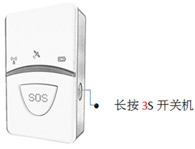
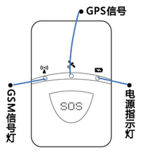
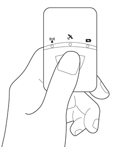
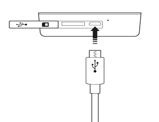

PT-718 个人追踪器使用手册
封面

绑定追踪器
1、在设备中装入SIM卡
2、启动设备：长按设备开关键3秒即可开启设备
3、登录航通守护者APP，点击添加新设备按钮，选择（个人设备）图标
4、点击【扫一扫】，扫描设备背面的二维码
5、验证成功后自动完成追踪器的绑定
追踪器介绍
1、指示灯简介

2.指示灯状态说明
| 名称 | 说明 |
|---|---|
| 电源指示灯 | 红色省电LED 1.充电中：常亮； 2. 开机未定位：开机未定位前常亮； 3.定位成功：不亮； 4.按SOS ：快闪，1S/次，持续20S； 5.低电压：慢闪：8S/次； |
| GSM指示灯 | 注册成功后, 每2S/次! |
| 定位卫星指示灯 | 定位后每2S/次! |
SOS按键使用
如遇见危险情况，长按SOS 按钮3S ，直至红色LED 快速闪烁，追踪器可发短信通知紧急联络人，同时推送报警信息至APP，以便及时获得援助；

充电方法
连结充电座
红色LED 常亮表示充电中
红色LED灭则表示充电完成

注意事项
1、请不要将产品浸泡水中
2、请将产品远离火源、高温高热等极端环境
3、本产品在断电状态和服务区外时，定位功能无法工作
配件介绍
1.Micro USB 线
2.佩带绳
常见问题
1.为什么无法开机？
答：可能由于电池耗尽导致，请连接充电器充电后再开机。
2.绑定设备失败？
答：请确认正确扫描二维码或者手动输入设备序列号，若仍无法绑定请与客服联系。
3.为什么定位不成功？
答：设备需要在空旷的位置方可准确定位，请检查所处的环境；建议首次定位在室外空旷位置进行。
4.为什么未配置电源适配器
答：设备支持主流手机适配器，为环保考虑，所以未配置电源适配器。
注意事项
1、一个设备仅能被一个账户绑定, 可以被主账户授权给其他三个账户；
2、请将产品远离火源、高温高热等极端环境
3、本产品在断电状态和无网络服务时，定位功能无法工作；
售后服务
请咨询当地的业务人员或者我司售后服务中心。
联系我们
有任何问题或建议，欢迎您随时联系我们。
中国大陆
官方微信：航通守护者
客服QQ:3106893070
服务热线：0755-8601 8738
中国香港
服务热线：+852-26273380
邮箱：cs-liteguardian@castelbeidou.com
海外
邮箱: sales@castelbds.com
公司网页:www.lite-guardian.com
服务热线:+8675586018742